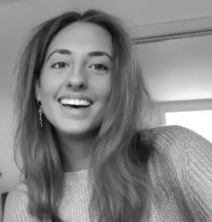

Jeg hedder Laura, og jeg er studerende på Multimediedesign på KEA. På uddannelsen arbejder jeg med webdesign, brugeroplevelser, visuel kommunikation og digitale designprocesser. Gennem projekter har jeg opnået erfaring med både design,
kodning og udvikling af digitale løsninger.
Jeg har tidligere taget en HF-uddannelse og herefter gået på VERA på linjen Grafisk Kommunikation. Her blev min interesse for visuel kommunikation, design og kreativ problemløsning for alvor vakt.
Ved siden af mine studier har jeg arbejdet som lærervikar og haft forskellige servicejobs, hvor jeg har opbygget erfaring med kommunikation, samarbejde og kundekontakt.
Jeg trives i mødet med mennesker og kan godt lide at kombinere kreativitet med struktur i mit arbejde.
Jeg interesserer mig særligt for grafisk design, branding, webdesign og visuel identitet. Gennem mine projekter arbejder jeg med at skabe løsninger, der både er funktionelle og visuelt gennemarbejdede.

- Udvikling af websites med HTML, CSS og grundlæggende JavaScript
- Responsivt design til mobil og desktop
- Udarbejdelse af wireframes og interaktive prototyper i Figma
- Research, brugerforståelse og målgruppeanalyse
- Planlægning og dokumentation af designprocesser
- Grundlæggende erfaring med Illustrator og Photoshop
- Formidling af visuelle løsninger og brugeroplevelser
Hvad har jeg fået ud af 1. semester?
På 1. semester har jeg fået en grundlæggende forståelse for designprocessen – fra research og idéudvikling til færdigt digitalt produkt. Jeg har lært at arbejde med HTML, CSS og grundlæggende JavaScript samt værktøjer som Figma, Illustrator og Photoshop.
Derudover har jeg fået erfaring med brugerundersøgelser, prototyper, tests og responsivt webdesign. Semesteret har styrket både mine tekniske færdigheder og min forståelse for, hvordan design kan bruges til at skabe gode brugeroplevelser.